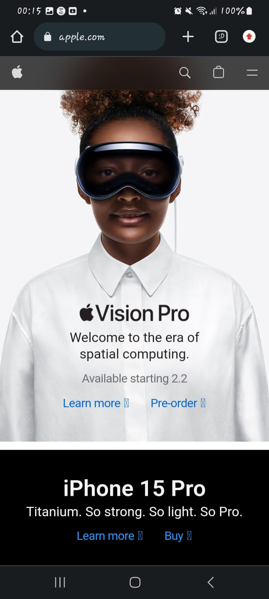
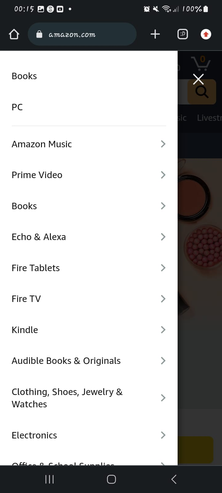

Visual Hierarchy
Apple
Apple If you have a hard time figuring out where to look on a page, it’s more than likely that its layout is missing a clear visual hierarchy. As we can see it is very accurate the level of importance that we can see in apple, from one teaches us the new products that there are in a simple and direct way.
Hick's Law
Amazon
Amazon Hick's Law is a simple idea that says that the more choices you present your users with, the longer it will take them to reach a decision.Amazon has several windows with a large number of products to choose from where the user can enter wanting to buy a product and end up buying more.
Fitt's Law
Spotify
SpotifyFitts' Law suggests that the larger and closer a target is, the faster and more accurately users can interact with it.And as we can see spotify is no exception, the songs, playlists and recommendations take up a lot of screen space and this helps the user to have more ease in making a decision and interacting.